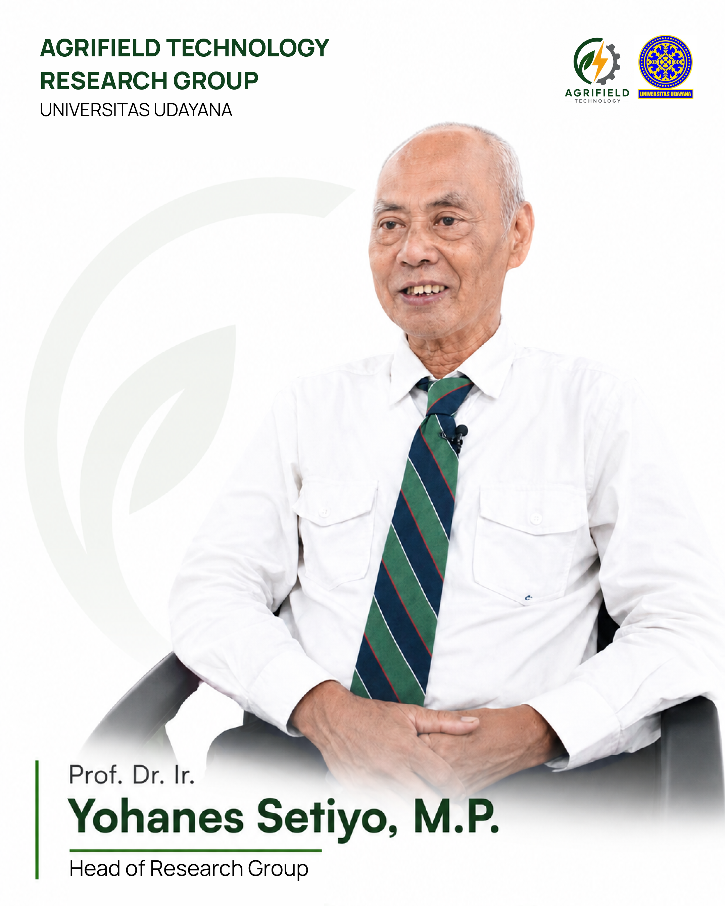
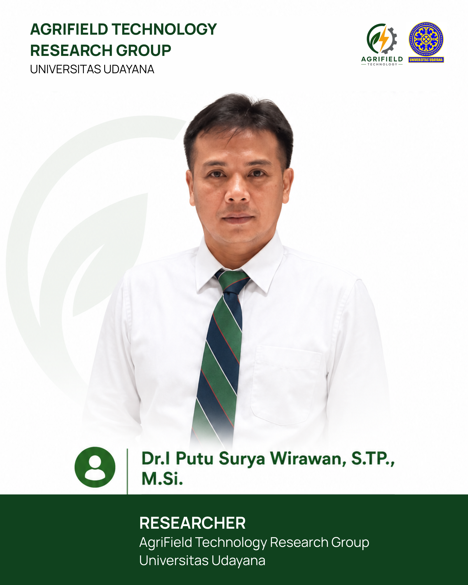
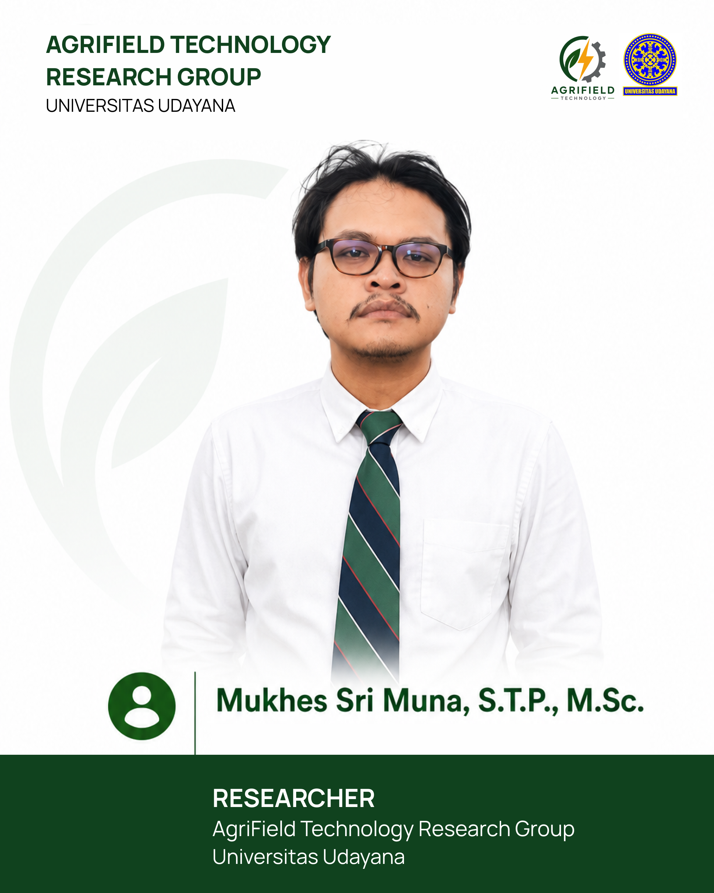
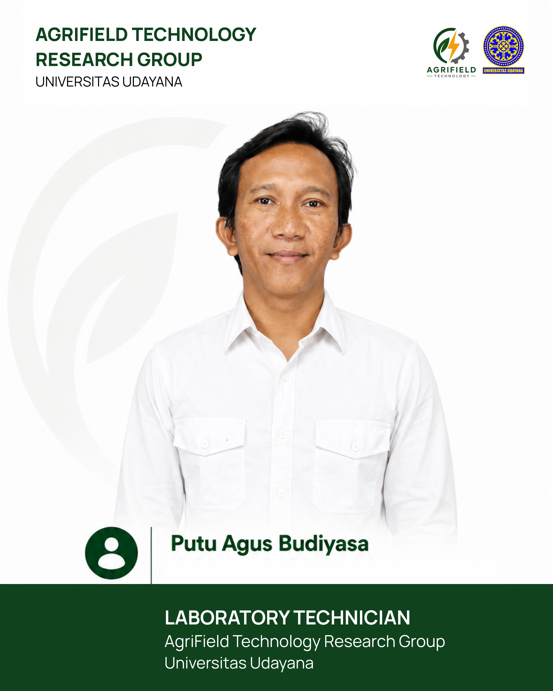
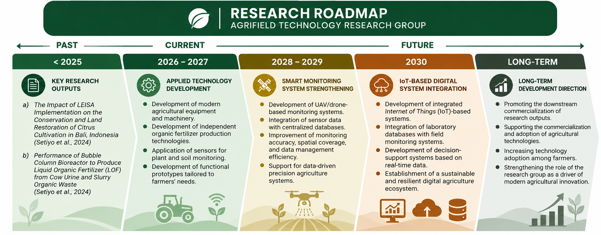

Engineering the future of agriculture.
AgriField Technology Research Group develops innovative engineering and digital solutions for smart and sustainable agricultural biosystems. Our research encompasses biosystems engineering, land and environmental management, composting, agricultural machinery, artificial intelligence, machine learning, image processing, robotic, and remote sensing.
Prof. Dr. Ir. Yohanes Setiyo, M.P.
AgriField Technology
Engineering technology for better agriculture.
AgriField Technology is a research group in the Energy and Agricultural Machinery Engineering field at the Program Studi Teknik Pertanian dan Biosistem, Universitas Udayana.
We develop practical technologies through agricultural engineering, energy systems, machinery, smart agriculture, AI, sensing, and data-driven approaches.
Meet the people
behind AgriField.




Where agricultural engineering meets emerging technology.
AgriField Technology develops research progressively, connecting existing research outputs with applied technology, smart monitoring, digital integration, and long-term agricultural innovation.

Turning agricultural challenges into engineering solutions.
We welcome research collaboration, technology development, field trials, and student projects.